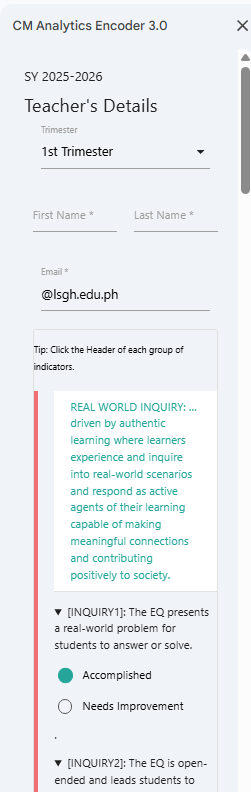
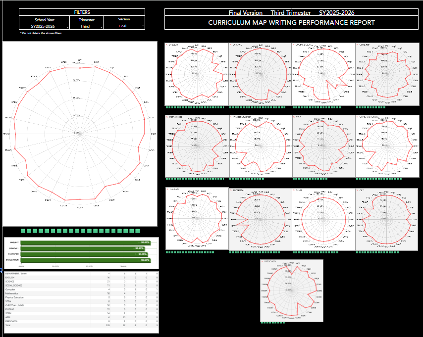
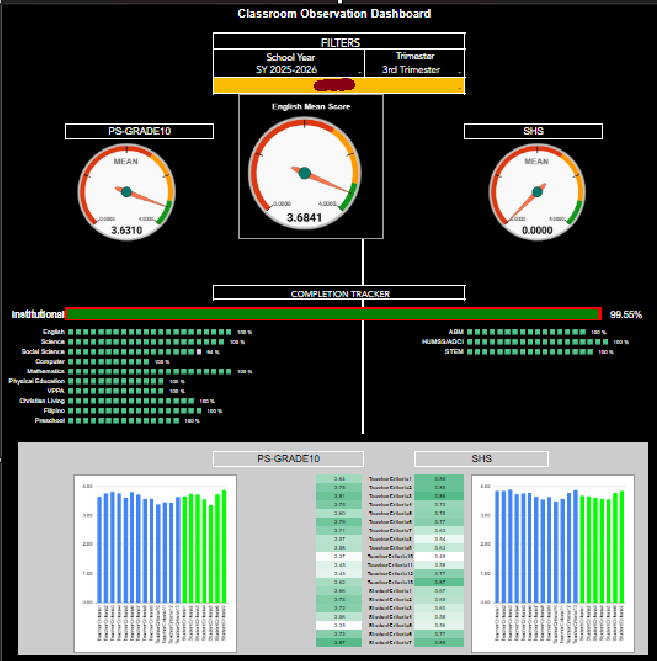
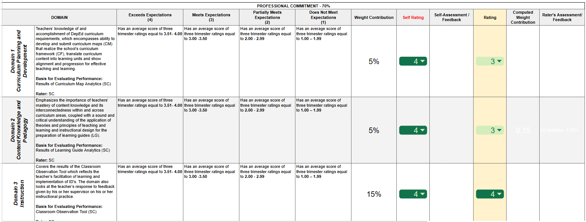

International Analytics, AI, and Alternative Energy Conference 2026
Instructional Supervision System
A data-driven automated system for monitoring and evaluation of teachers’ performance
Reynel Mario Canor La Salle Green Hills, Philippines · De La Salle University, 2026
COVER — keep this on screen while you are introduced and while people settle in.
Greet the audience and introduce yourself and your school in one line: “Good morning. I’m Reynel Mario Canor from La Salle Green Hills, a Lasallian basic-education school in Metro Manila.”
Then, without announcing the title, advance to the prompt: “Before I tell you about my study, let’s try something familiar.”
New chat
Act as a subject coordinator. Review every teacher’s curriculum map, learning guide and classroom observation for three trimesters. Then rate each one fairly for merit, tell each exactly what to improve, and find your department’s training needs. Show your evidence.
For the next 11 minutes, you are the coordinator.
Instructional Supervision System · Reynel Mario Canor · La Salle Green Hills · DLSU Conference 2026
(~45 sec) This prompt is for the AUDIENCE, not for an AI. The goal is to put everyone in the coordinator’s seat, so they follow the rest of the talk from that point of view.
Say: “We all know how to prompt an AI — ‘Act as a…’. Today, I’m prompting you.”
Read the prompt slowly, looking at the audience: “Act as a subject coordinator. Review every teacher’s curriculum map, learning guide and classroom observation for three trimesters. Rate each one fairly for merit. Tell each exactly what to improve. Find your department’s training needs. And — show your evidence.”
Point to the green line: “For the next eleven minutes, you are the coordinator. Keep that hat on — every part of this talk answers one line of that prompt.”
Optional, if the room is warm: “Quick show of hands — who has ever rated a colleague, or been rated, with only impressions to go on?”
01
Problem
Why supervision data wasn’t answering the prompt
Problem · Solution · Results
(~5 sec) Just say: “First, the problem.” Advance.
Problem · Your job as coordinator, without a system
Manual records. Isolated tools. Feedback that can’t diagnose.
Fragmented data
CM, LG and observation checks recorded by hand, each in its own format.
Hidden trends
Tracking growth meant re-reading records. Training needs stayed invisible.
Weak merit basis
Compiling evidence was slow; feedback rarely said what to fix.
(~60 sec) Keep them in the role: “So, coordinator — here’s what you’re working with today.” This is RQ1 — the challenges in our current process at LSGH.
Walk the three cards:
1. Fragmented data — coordinators do monitor CMs, LGs and observations, but recording is manual and every supervisor devises their own approach and format.
2. Hidden trends — to see how a teacher performs over time, you have to thematically re-read records. Training needs are hard to pinpoint.
3. Weak merit basis — compiling for merit rating is slow, and feedback to teachers is generally not diagnostic.
Why it matters (one breath): “And this matters. The Philippine CPD Act, RA 10912, requires teachers to keep upgrading — which needs objective evidence of their gaps. And in 11 of 19 OECD countries, appraisal affects pay.”
Transition: “So the question became: can we build the coordinator a system that actually answers that prompt — with evidence?”
Then name the study (the title is on the cover, so say it, don’t show it again): “That is my study — the Instructional Supervision System: a data-driven, automated system for monitoring and evaluating teachers’ performance.”
Problem · Research questions
Four questions guided the study
1
Challenges: what hinders recording, monitoring and sharing teacher data?
2
Design: how can a digital system evaluate CMs, LGs and observations?
3
Output: how does it present data for merit and training needs?
4
Impact: how does it improve coordinators’ supervision practice?
(~35 sec) Four research questions — don’t read them word for word, use the bold labels.
1. Challenges — what we just saw.
2. Design — how to build a system for structured, data-driven evaluation of curriculum maps, learning guides and classroom observations.
3. Output — how it produces and displays data for merit rating and training needs assessment.
4. Impact — how it helps subject coordinators in monitoring, data access, decision-making, and merit rating.
“Next, the solution — the system itself, which answers RQ2 and RQ3. Then the results, which answer RQ1 and RQ4.”
02
Solution
One integrated analytics system for planning, design and teaching
Problem · Solution · Results
(~5 sec) “So here is the solution — the Instructional Supervision System.” Advance.
Solution · RQ2 · Constructive Alignment (Biggs, 1999)
Evaluate the whole teaching chain
Plan
CM Analytics
Curriculum Map: are intended outcomes aligned?
28
indicators
Design
LG Analytics
Learning Guide: instructional designs ID1–ID9
34
indicators
Implement
COT Analytics
Classroom Observation: teacher and student look-fors
20
indicators
Indicators anchored on the LSGH Curriculum Framework and approved by school authorities
(~45 sec) RQ2 — the design. It rests on Biggs’ Constructive Alignment: learning works when outcomes, teaching and assessment line up.
So the system follows the whole chain, not one snapshot:
- Plan — CM Analytics, 28 indicators.
- Design — LG Analytics, 34 indicators across instructional designs ID1–ID9.
- Implement — COT Analytics, 20 teacher and student look-fors.
82 indicators, all from the LSGH Curriculum Framework and approved by the school.
Solution · RQ2 · Sheets + Apps Script
One click turns a checklist into a report
Input
Tick Accomplished or Needs Improvement per indicator in a sidebar
Process
Scores convert to a 4-point scale and save to a central database
Output
PDF report emailed to the teacher; the dashboard updates

(~55 sec) Architecture. Built on what the school already has — Google Sheets as the database, Google Apps Script for the automation. No extra software, no extra cost.
It’s an Input–Process–Output flow:
- INPUT: the coordinator opens a custom menu — “CM Analytics Encoder 3.0” — and a sidebar appears (point to screenshot). Teacher, trimester, school year, then each indicator: Accomplished or Needs Improvement.
- PROCESS: on submit, the raw marks become a 4-point score and are stored in the database.
- OUTPUT: a PDF performance report goes straight to the teacher’s inbox through Gmail, and the dashboard updates for the coordinator.
For COT, the coordinator can “Send to Me” first to verify, then “Send to Teacher”, or save as draft.
Solution · RQ2 · Design-Based Research
Six cycles of use and refinement
CYCLE 1
Indicator checklist
Auto-feedback on unmet indicators; raw counts only
CYCLE 2
Scores and radars
Normalized scale; weights so critical indicators count
CYCLE 3
Analytics, extended
Indicator-level percentages; CM model applied to LG, COT
CYCLE 4
Data integrity
Per-indicator storage and validation checks
CYCLE 5
Shared scoring
One score set for co-written maps and guides
CYCLE 6
Decision support
Auto-emailed reports; department dashboards
Version 3.0, after three years of use, now feeds the school’s merit rating
(~45 sec) Method: Design-Based Research — build, use it for real, refine. One line per cycle:
1. Checklist with auto-feedback — but raw counts couldn’t be compared.
2. Weighted scores and radar charts, so critical indicators count.
3. Indicator-level analytics, extended from CM to LG to COT.
4. Database rebuilt for per-indicator storage and validation.
5. Shared scoring for co-written maps and guides.
6. Auto-emailed reports and department dashboards.
By year three, version 3.0 fed the merit rating.
Solution · RQ3 · Dashboards
The dips are the training needs

CM and LG radars show every indicator at once. A dip, like ID5 , is a training need.

COT gauges compare department means; the tracker shows 99.55% of teachers observed.
(~55 sec) RQ3 — how the system displays the data. These are the real dashboards, third trimester, SY 2025–2026.
Left — CM and LG: radar charts show every indicator at once, for the whole school and for each subject. A full radar is strong performance; a dip is an indicator where teachers fall short — a training need, made visible. In the LG data, dips cluster on ID5, higher-order thinking, so that’s where PD goes.
Right — COT: observation happens in real time, so gauges compare unit and department means, and bars show each look-for. The completion tracker shows who still needs to be observed — 99.55% in this snapshot.
Teachers, meanwhile, get their own PDF report right after evaluation.
Solution · RQ3 · Merit rating
Evidence becomes one merit score
5%
CM · Domain 1
5%
LG · Domain 2
15%
COT · Domain 3

3-trimester average: 3.51–4.00 Exceeds · 3.00–3.50 Meets · 2.00–2.99 Partially · below 2 Does not meet
(~50 sec) This is where RQ3 pays off — merit rating.
Each subsystem maps to a domain of the school’s merit rating form:
- CM → Domain 1, Curriculum Planning and Development — 5%
- LG → Domain 2, Content Knowledge and Pedagogy — 5%
- COT → Domain 3, Instruction — 15%
The system averages the teacher’s scores across the three trimesters, and that average lands in a band: 3.51 to 4.00 is “Exceeds expectations,” and so on.
So a full quarter of the Professional Commitment component now rests on documented, indicator-level evidence — not on impressions. That’s the “show your evidence” line from the prompt.
03
Results
What changed after three years of use
Problem · Solution · Results
(~5 sec) “Did it work? Here are the results.” Advance.
Results · RQ1 · Challenges in supervision
Six challenges, each met by design
Challenge found System response Fragmented records, each in its own format One database, approved indicators Manual recording and compiling Sidebar encoding, automatic scoring No way to track performance over time Per-indicator storage, trend dashboards Raw counts hid critical gaps Weighted, normalized 4-point scores Re-encoding co-written CMs and LGs Shared scoring for team outputs Slow, manual feedback to teachers PDF reports auto-emailed via Gmail
(~50 sec) Now the results, starting with RQ1: what challenges affect recording, monitoring and sharing teacher performance data?
The first three came from the manual process we started with: records fragmented across supervisors and formats; recording and compiling done by hand; and no way to follow a teacher’s performance over a long time span.
The last three surfaced during the DBR cycles themselves, and are documented in the appendices:
- Raw counts and equal weights let teachers score high while missing critical indicators (Cycle 2, Appendix H).
- Teachers who co-wrote one CM or LG had to be encoded again and again, and entries were overwritten (Cycle 5, Appendix G).
- Feedback still had to be obtained, interpreted and delivered by hand, which delayed it (Cycle 6).
The right column is how the system answered each one. That closes RQ1. Next, RQ4: did coordinators find it useful?
Results · RQ4 · Coordinator survey (N = 10)
Every construct rated above 4.8
Evidence for merit rating
4.89
Improvement and responsiveness
4.89
Data access and interpretability
4.85
Decision support for coaching and PD
4.83
Monitoring teacher performance
4.81
5.00
median on all five constructs
SD 0.28–0.35 · no rating below 4.00
Bar length = mean out of 5. Survey is supporting evidence alongside the DBR findings.
(~50 sec) RQ4 — impact. Ten subject coordinators, the actual users, rated the system on a 5-point scale across five constructs.
Every construct averaged above 4.8. Highest: evidence-based contribution to merit rating, and system improvement and responsiveness — both 4.89. That second one matters to me, because it says the DBR cycles were felt: coordinators saw their feedback turn into changes.
Agreement was tight: median 5.00 everywhere, SD between 0.28 and 0.35, and no rating below 4.
Be honest about it: N is 10, so the survey is supporting evidence. The main evidence is the documented design cycles and the system’s actual use.
Results · RQ4 · In coordinators’ words
“…ang kalakasan at kailangan pang paunlarin ng mga guro at ng department.”
“…the strengths of the teachers and the department, and what still needs developing.”
“…design more targeted and specific action plans.”
“Averages of the three components (CM, LG, and COT)… were available.”
“…to see specific areas that need improvement” — in vertical meetings.
(~40 sec) What coordinators wrote in the open-ended items.
Read the big one in Filipino, then translate: “the strengths, and what still needs developing, of the teachers and of the department.” The system shows both — for each teacher and for the whole department.
Then the three smaller quotes:
- “Design more targeted and specific action plans to address these areas of concern” — training needs, answered.
- The CM, LG and COT averages ready for performance appraisal — merit rating, answered.
- Specific areas for improvement in CM and LG, used in vertical meetings — conversations are now about indicators, not impressions.
Teachers also became more reflective, because they receive indicator-based feedback automatically.
Results · Back to the prompt
Act as a subject coordinator. Review… rate each fairly for merit… tell each what to improve… find training needs. Show your evidence.
Review everything — 82 indicators across CM, LG, COT
Rate fairly — trimester averages feed 25% of merit weights
Say what to improve — indicator-level PDF, auto-emailed
Find training needs — radar dips by subject and department
The coordinator still decides. Now the evidence comes with the decision.
(~50 sec) Bring back the opening prompt.
“Coordinators — you’ve had this job for eleven minutes. Here’s what the system now gives you, line by line.”
- Review everything — 82 indicators across planning, design and implementation.
- Rate fairly — three-trimester averages feed CM 5%, LG 5%, COT 15% of the merit rating.
- Tell each teacher what to improve — an indicator-level PDF report in their inbox as soon as the evaluation is finalized.
- Find training needs — the radar dips, by subject and by department.
Land the conclusion: “This isn’t AI replacing the coordinator. The coordinator still makes the judgment. What changed is that the evidence now comes with the decision — transparent, consistent, and reflective.”
Limitations and recommendations
Honest limits, clear next steps
Limitations
No causal claim on teacher or student gains
Teacher-made assessments not analyzed
Indicators specific to LSGH
Only as good as the evaluator’s input
Google Sheets limits scale and security
Recommendations
Keep calibrating the scoring model
Tighten access control and user roles
Standardize teacher identity records
Add a report preview before sending
Review indicators periodically
(~45 sec) Being honest about the limits:
- This is a design-and-development study, so I can’t claim the system caused teacher improvement or learning gains.
- It covers CM, LG and classroom implementation — not teacher-made assessments.
- The indicators are LSGH-specific; another school would need to adapt them.
- Output depends on the quality of what coordinators encode.
- Google Sheets and Apps Script have limits on scale and security.
Next steps: keep calibrating the scoring model; secure access so hidden sheets aren’t exposed; a standard teacher ID to avoid mismatched names; a preview before reports are sent; and periodic review of indicators against the Curriculum Framework and our Mission-Vision.
> Act as the audience. Ask the researcher anything.
Thank you
Reynel Mario Canor
With thanks to Dr. Madiclum, Ms. Arkaina, Dr. Sentones, Ms. Ines and Dr. Rapatan
(~15 sec) Close the loop on the opening with one last prompt: “Act as the audience — ask me anything.”
Thank the validators (Dr. Pamela Madiclum, Ms. Katherine Arkaina) and the academic leaders (Dr. Alce Sentones, Ms. Maria Donna Ines, Dr. Mike Rapatan), then open the floor.
Running total: about 11 minutes before Q&A.
Next step · Learning Outcomes Analytics
Evaluation completes the cycle
1 · Planning
CM + LG Analytics
Is the plan aligned with intended outcomes?
In use
2 · Implementation
COT Analytics
Is the plan carried out in the classroom?
In use
3 · Evaluation
Learning Outcomes Analytics
Did students actually learn? Results feed back into planning.
Next
BACKUP SLIDE — show only if someone asks about next steps.
“The Instructional Supervision System covers planning and implementation. The natural next step is evaluation: did students actually learn?”
Walk the cycle:
1. Planning — CM and LG Analytics check that the plan is aligned with intended outcomes.
2. Implementation — COT Analytics checks how the plan is carried out in class.
3. Evaluation — Learning Outcomes Analytics looks at student learning outcomes and feeds back into planning. That closes the Constructive Alignment loop: outcomes, teaching, assessment.
It also answers one of my limitations — the current system does not yet analyze teacher-made assessments or student learning gains.
If you open the live app, it signs in with an LSGH account and may show real data. Present from a blurred screenshot unless the audience is internal.